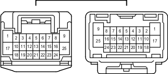

Connector No.
FM1
Connector Part No.
90980-12414/90980-12413
Connector Color
Gray / Gray
Repair W/H
025Ⅱ-21,090Ⅱ-4

Routing Diagram
Instrument Panel Routing Diagram (No.2) /
System Circuits
Power Window
Smart Entry & Start System & Engine Immobiliser System & Steering Lock
Seat Heater (Front) ('08.10-'09.12)
Seat Heater (Front) ('09.12-)
Combination Meter
Audio (w/o Navigation) (-'09.12)
Audio (w/o Navigation) ('09.12~)
Audio & Navigation & Back Guide Monitor (~'09.12)
Audio & Navigation & Back Guide Monitor ('09.12~)
Fog Light (Rear)
Interior Light
Light Auto Cut